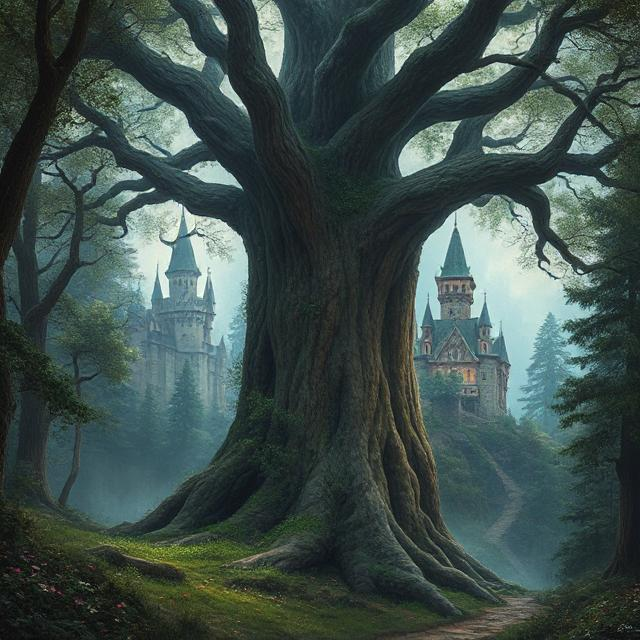

The library is silent, its towering shelves stretching into the shadows as
the moonlight filters weakly through cracked windows. Dust lingers in the
air, and every creak of the wooden floor echoes like a whisper of
something long forgotten. Before you lies a table scattered with ancient
books, their covers worn and titles nearly erased by time.
Each book holds a story, but also a secret—your secret. Once you choose
and open one, its fate will intertwine with your own, leading you deeper
into the mystery that waits in the dark.
The book glows with golden hieroglyphs, opening to a world of endless sands and towering pyramids. Whispers of pharaohs call you forward, promising treasures and secrets hidden deep within the desert's heart.
The pages bloom with emerald light, revealing a forest alive with whispering trees and hidden paths. Somewhere beyond the shadows, a forgotten castle waits, its gates calling you to discover the magic within.
